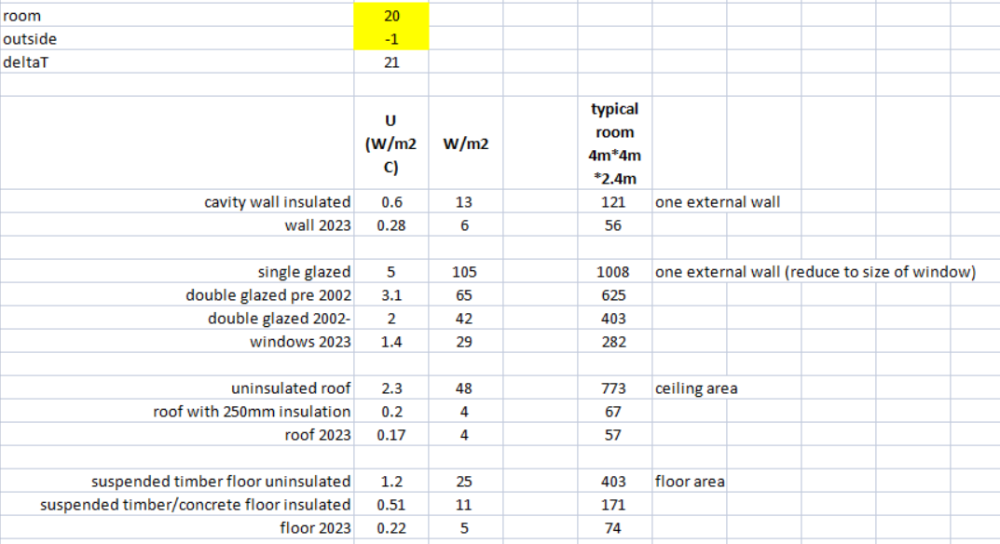
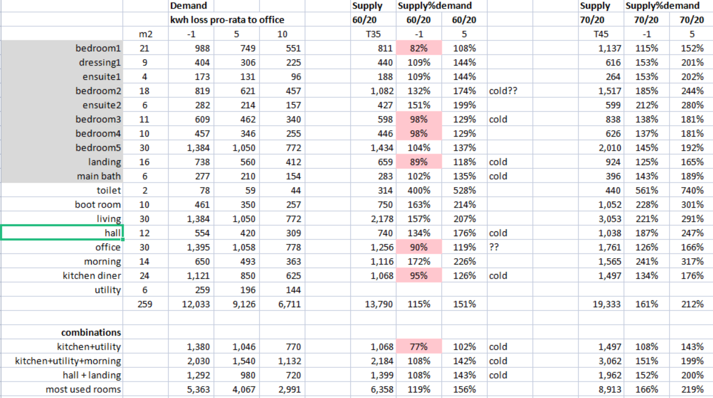
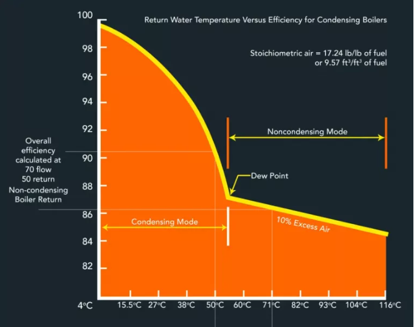

Understanding the heating in your home
Introduction
The key questions
As gas prices soared I had some questions about my home energy usage:
- Why are my energy bills so high when I have most of the radiators switched off?
- How can I reduce my energy usage?
- When is it more effective to use electric heaters than gas central heating?
To answer these questions I analysed how much energy my house should be using; how much is delivered by the central heating; and how the demand and supply are matched.
- Introduction
- Review of some key definitions
- Demand for energy
- Supply of energy
- Matching demand and supply
- Heating one room instead of the whole house
- Warming the house
- The answers
Review of some key definitions
What is power and energy?
Power (kw) = Energy (kwh) / Time (hours)
Power is the rate at which energy is generated or used. It can be measured in Watts. A 100W lightbulb uses the same power as two 50W lightbulbs.
Energy is the amount of power used over a period of time. It can be measured in WattHours. So a 1 kw fire for one hour will require 1 kwh of energy. Sometimes different units are used e.g. Calories, Joules, Therms or BTUs. These can easily be converted to Kilowatt hours.
A kwh is exactly the same amount of energy whether it comes from electricity, gas or something else. So a 1 kwh electric fire and 1 kwh standalone, propane fire produce exactly the same amount of energy and heat the room at the same rate.
What is efficiency?
energy_supplied = energy_used
This is a law of physics. It is a zero sum game. If you input 1 kwh of energy then it will output 1 kwh of heat. Nothing is “used up”. However some of that energy may go into things other than what we want.
efficiency = energy_used_for_what_we_want / energy_supplied
Efficiency is the % of the input energy (kwh) that goes into heating your home to your desired temperature. When the room is the same temperature as outside then a 1 kw electric fire will inject 1 kwh of energy. As the room warms up energy will leak through the walls, ceiling, windows and floor. The heater is still supplying 1 kwh but more and more is used to just replace the leakage. Once the leakage reaches 1 kwh then the room won’t get any warmer.
Gas central heating has some additional inefficiencies - your boiler emits heat outside via the flue; your hot water pipes pass through the attic and expend some energy there.
cost efficiency = energy_supplied_for_what_we_want / £_supplied
The price of 1 kwh of electricity is three times that of 1 kwh of gas. Even though a gas boiler loses 15% to the flue it will still work out cheaper than electric heating in most cases.
Demand for energy
leakage
Leakage watts = Area * U * deltaT
Energy is leaked through walls, windows, floor and ceiling. That is it! Energy cannot be “used up” so it has to leave the room via one of these surfaces.
Area is the square metres of the surface. So the leakage is directly proportional to the area.
DeltaT is the difference between the room temperature and outside temperature. If it is 10C inside and 10C outside then leakage is zero. If you heat your house to the same temperature in each room then leakage through internal walls is zero; downstairs ceiling is zero; upstairs floor is zero. To maintain 20C room temperature when it temperature is 0C outside requires double the energy of when it is 10C outside as delta is 20 versus 10.
U varies according to the material and thickness. A typical wall will have layers of different material each of different materials and thickness. The U value represents how those materials conduct heat in aggregate. For a modern house U values are clearer than older houses where you may not know the materials used and they may have degraded over time. The table shows examples of typical U values:

This shows:
- Modern homes are much more efficient than older homes
- A new wall elimnates 50% of the leakage versus an uninsulated wall
- A new window eliminates 80% of leakage versus a single glazed window
- A new roof eliminates 90% of the leakage versus an uninsulated roof
- A new floor eliminates 80% of the leakage from an uninsulated wooden floor
- Windows have five times the leakage per square metre versus walls
- Floors are just as leaky as roofs. On an older house it is easy to insulate the roof. Once that is done the floor is leaking six times more heat than the roof. Many think that heat rises so the ceiling/roof is key. Actually it is not heat that rises but hot air. Unless you have holes in your ceiling the air will stay in the room. Therefore heat loss through the floor is just as critical as the roof. Unfortunately this can be hard to address on older properties.
ventilation
ventilation loss = .33 * Air changes per hour * Volume * deltaT
If your home were air tight then you would suffocate. So there is some air coming in from outside through gaps under doors, vents and elsewhere. The leakage formula does not work here as U is infinite. The issue is how fast the air is coming in.
It is not clear how to estimate Air changes per hour (ACPH). I am using figures from Engineering toolbox who suggest .33 + .33 * number of external windows/doors. Multiple alternatives such as the OU suggest circa .5. Great_home suggest 1.5.
[Engineering Toolbox]https://www.engineeringtoolbox.com/air-change-rate-d_882.html [Open University]https://www.open.edu/openlearn/nature-environment/energy-buildings/content-section-2.4.1
example
There is an online calculator to apply the formulae
[Online calculator]https://great-home.co.uk/radiator-sizing-guide-and-btu-calculator
I have adapted this using my own assumptions for a single room but there is a lot of guesswork:
- Cavity wall insulation is from 1935 so it may be low standard or have deteriorated
- It is unclear what material is hidden in the floors, walls and ceiling following multiple extensions in different years
- The attic is insulated but there are old metal tanks that conduct heat. Too big to fit through the rafters.
- Unclear how to set ACPH. Used .7 but could be .5 or 1.5

When temperature outside is -1C it requires slightly more than a 1 kw electric fire to maintain temperature in my office. The estimate of demand using the U value formula is 1.4K. This is in the right ballpark but could be 40% too high. Also it is very sensitive to the ACPH factor as 24% of energy loss is via ventilation.
Tried a bedroom as well. There are a few expected differences. Smaller room; upstairs demand is lower as an insulated ceiling is better than uninsulated floor; and windows upstairs are smaller but older. The biggest drivers are the size of room and ACPH. Other variations in characteristics seem to balance out. I have expanded the calculations for this room to the rest of the house based on room size only.
This gives total maintenance energy of 12kwh, 9kwh, 6.7kwh at -1C, 5C, 10C respectively. Heating the house from cold is in addition to this. My smart meter spikes when the heating goes on. The spike is because it has to heat the water from cold; and because the deltaT is over 20C so the kwh of the radiator is at its highest. After a few hours it stabilises at half the peak.
Supply of energy
radiator output
The table shows Stelrad radiator outputs. Other makes may vary but are likely similar. In general radiator suppliers quote outputs at delta T50. This means 50C difference between radiator and room temperature. The radiator temperature used is the average of input and output. For example input 75C, output 65C gives radiator 70C. With room at 20C that gives delta = 70-20 = 50C.
[Stelrad radiator guide]https://www.stelrad.com/wp-content/uploads/2018/05/27559_Stelrad-Spec-Brochure_August-2022_FLIPBOOK.pdf

Setting the boiler to 60C gives T35 for spring and autumn temperatures Setting the boiler to 70C gives T45 for winter temperatures
To adapt from T50 to other T35 and T45:
P = P50 * (tin-tout)/(ln(tin-ta)-ln(tout-ta))/49.32)^1.33

Matching demand and supply
The table below shows how well my radiators meet the demand by room at external temperaatures of -1C, 5C, 10C with the boiler set to T35 and T45.

The pink cells show where radiator supply is less than demand. Not that in this case demand means ability to maintain temperature only. Additional watts would be needed to warm the house in the first place.
The model suggests:
- 60C is enough not enough for some rooms but is overall. In practice it is not enough for any rooms let alone overall.
- 70C is easily enough. Mostly this is true in practice as long as all the radiators are on
Some rooms are very hard to estimate
- bedroom2 has a cupboard into the eves which is uninsulated. possibly could insulate or add draft excluder. It also has two external walls that face North.
- Landing/Hall are open plan; uninsulated external door; likely drafts
- Kitchen has to heat the utility room as well. This has boiler but no radiator and a door with single glazed glass. The adjacent morning room is needed to warm all three rooms
Heating one room instead of the whole house
Walls, floor and ceiling
To heat just the office means a temperature gap with the internal walls and ceiling which increases leakage. Assuming the unheated rooms are at 8C then this increases the demand from 1.4kwh to 2.2kwh. If the gap were 4C then it would be 2.6kwh. At 70C the radiator outputs 1.7kwh so may need to turn up the boiler. In practice I did not actually need to do this. Nevertheless the smart meter shows this one room costs not 2.6kwh but 8kwh; and five rooms with 11.5Kwh of radiators costs 15Kwh. So where does the missing 4-5kwh go?
Boiler
My boiler is 24kwh. The rated efficiency is 97% with condensing and 87% without. At 70/60 there is no condensing so the boiler is 87% efficient and the leak is 13% * 8000 = 1 kwh so there is a gap of 4.3kwh. For the five rooms the boiler flue loses 2kwh so there is a gap of 3.5kwh.
At lower temperature there is supposedly a cost saving of up to 10% from condensing. However condensing only starts to happen at the “dew point” and to get a 10% saving you would need a really low output from the boiler.

Even in the Spring the boiler output needs to be at least 60C output to heat the house. This would be around 50C return temperature and about 3% saving. Potentially you may get an additional saving whilst it is warming the water at startup and you have cold water coming back. However once the boiler is up and running the return temperature will be at least 50C. Any less and the house won’t warm up.
Still worth taking the 3% saving where you can. That means setting the boiler output temperature to 60C if the radiators are warm enough. I find this is only OK if the outside temperature is 5C+. Any less than that requires 70C to reach and maintain 20C inside the house. Even at 10C it is much faster to warm the house at 70C than 60C.
Pipes
Even though the radiators are all turned off the hot water is circulating around the whole system. If you are heating the whole house this does not matter even if the pipes are uninsulated because any heat from the pipes is inside the heated envelope and contributes to heating the rooms. In this case the pipes, often uninsulated, are carrying hot water through cold rooms.
A rough estimate is that the pipes go the length of the house plus width plus height. Times two because there is an outbound and return pipe. Could be more as the pipes may follow a circuitous route after extensions were build. This comes out as 65m of 22m pipe @60W/m plus say 10m of 15mm pipe @45W/m. Total leakage from pipes 4.3kw
This is close to the missing kw for single room heating. The five room heating loses a bit less as some pipes pass through heated rooms and any energy emitted supports the radiator.
Bottom line is that central heating is designed to heat the whole house and is efficient doing that. For a single room it is more cost effective to use a 1 kwh electric fire than 8kwh of gas. Heating five rooms with central heating costs 3kwh/room so equivalent cost to a 1 kw electric fire.
Note that this is based on a 260m2 house which is about double the average UK house size. Also an older house so not very efficient. It may not be the same for other houses.
Warming up the house
All the above is just to maintain the temperature at the desired 20C. However unless the heating is on 24/7 we need to warm the house from cold at least once or twice a day. There are formulae to tell us the power required and the time it should take.
Power to heat room = cp * density * volume * deltaT Time to heat room = Energy/Power / 60 minutes
These formulae suggest my house should warm up in 20 minutes. It actually takes much longer. Unfortunately the time to heat the room does not take any account of leakage. When the room is cold there is not so much leakage. However as it warms the leakage increases and the power available gets soaked up by the leakage leaving less and less to heat the room. If the kwh supplied is too low then the room may never reach the target temperature.
The answers
Based on the above we can answer the questions raised at the start
Why are my energy bills so high when I have most of the radiators switched off?
Central heating is designed to heat the whole house. If you only heat one or a few rooms then there is a lot of waste.
- Turning the heating off means your room has gone from 2 external surfaces to 6. A typical room in a heated house leaks through one external wall plus ceiling upstairs or floor downstairs. Internal walls/floor/ceiling are similar temperature to the room so do not leak. If the heating is turned off then there are now leaks through four external walls; ceiling and floor. That is six external surfaces instead of two. Whilst the temperature difference is not as high as with outside there is still a big increase in leakage which requires more energy.
- Hot water pipes flow throughout the whole house. If the heating is on then these are within the heated area and support the radiators in reaching the desired temperature. If the heating is off then this heat is lost. Furthermore it leaks at a much higher rate in cold rooms.
- The boiler loses 13% through the flue. Condensing is supposed to save 10% but in practice this does not work well.
How can I reduce my energy usage?
- Add more insulation
- Find any air gaps and fill them
- Turn off the heating when you don’t need it. This includes when you are out and in Spring/Autumn
When is it more effective to use electric heaters than gas central heating?
It is cheaper to use electric heating for up to four large rooms. Mostly this is because of heat lost via pipes in the cold rooms. In practice it is uncomfortable to walk through a cold hall to a cold kitchen. Therefore the electric heater solution is only feasible in limited circumstances such as working in an office all day or spending an evening watching TV.